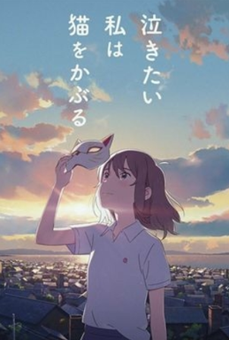

A Whisker Away A Whisker Away (Japanese: 泣きたい私は猫をかぶる, Hepburn: Nakitai Watashi wa Neko o Kaburu, lit. "Wanting to Cry, I Pretend to Be a Cat") is a 2020 Japanese animated film produced by Studio Colorido, Toho Animation and Twin Engine. Directed by Junichi Sato and Tomotaka Shibayama, the film was released on June 18, 2020, on Netflix in Japanese. Originally slated to premiere with the Japanese release of the film, the English dub's release was delayed until June 28, 2020, when it was officially released on Netflix.
Miyo Sasaki is an unhappy middle school girl living in the town of Tokoname, Aichi Prefecture. She does not get along with her stepmother Kaoru. She always flirts with her crush, Kento Hinode, in spite of his repeated rejections. One day, she receives a magical Noh mask from a mysterious mask seller, which lets her become a cat. As "Tarō", she spends time with Hinode, keeps him company while he studies Japanese pottery, and listens to his problems. She longs to confess that the cat he loves and the girl he barely knows are the same person. One day, Miyo overhears boys at school talking trash about Hinode and loudly intervenes by jumping off the school building to defend his honor. She hurts herself during the jump, and for the first time, Hinode shows warmth as he takes her to the nurse and shares his lunch with her. Later that evening, as Tarō, Miyo learns that Hinode's family is closing their pottery shop, as the family can no longer afford it. The need to cheer him up inspires Miyo to confess her love in a letter. In class, a boy snatches the note before she can deliver it and reads it aloud, embarrassing Miyo and Hinode. Hinode saves face by publicly telling Miyo that he hates her.
Miyo decides that life with Hinode as a cat is better than life without him as a human, and her human face falls off in the form of a porcelain mask. The mask seller claims her face and tells her that he will give it to a cat who wants to become human. Miyo's friends and family begin searching for her, including Hinode, who confesses to Tarō that he doesn't really hate her. Trapped in her cat body, Miyo begins losing her ability to understand humans and regrets her choice. Kinako, Kaoru's cat, obtains Miyo's human face and takes over her human life. She refuses to return Miyo's face, explaining that she is approaching the end of her natural lifespan but wishes to continue living and bring happiness to her owner. Miyo follows the mask seller to the secret Island of Cats to convince him to turn her back into a human. Kinako comes to understand just how much Miyo's stepmom loved her cat and has a change of heart. She reveals the secret of the masks to Hinode and takes him to the island to save Miyo. Kinako gives Hinode a cat mask, which turns him into a half-cat. Kinako and Hinode are trapped by the mask seller but are rescued by Miyo and another cat who used to be a human.
Voiced by:Oolongta Yoshida(Japanese); Griffin Burns(English)
Miyo follows the mask seller to the secret Island of Cats to convince him to turn her back into a human. Kinako comes to understand just how much Miyo's stepmom loved her cat and has a change of heart. She reveals the secret of the masks to Hinode and takes him to the island to save Miyo. Kinako gives Hinode a cat mask, which turns him into a half-cat. Kinako and Hinode are trapped by the mask seller but are rescued by Miyo and another cat who used to be a human."
Voiced by: Yūsuke Nagano(Japanese);Griffin Puatu (English)
The credits show Miyo telling her friend about how Hinode loves her, Hinode telling his mother that he wants to do pottery, and Hinode doing Miyo's signature "Hinode sunrise attack" to her.
Miyo and Hinode confess their love to each other and Kinako returns Miyo's face, returning her to normal."